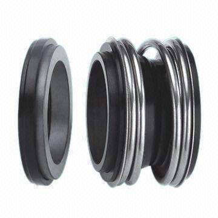
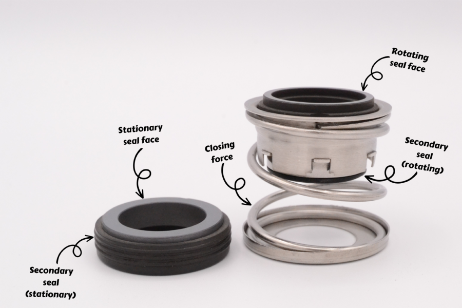
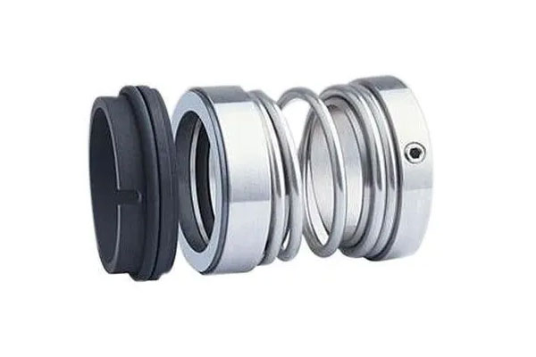
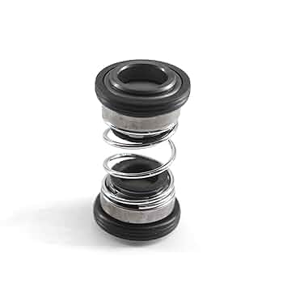
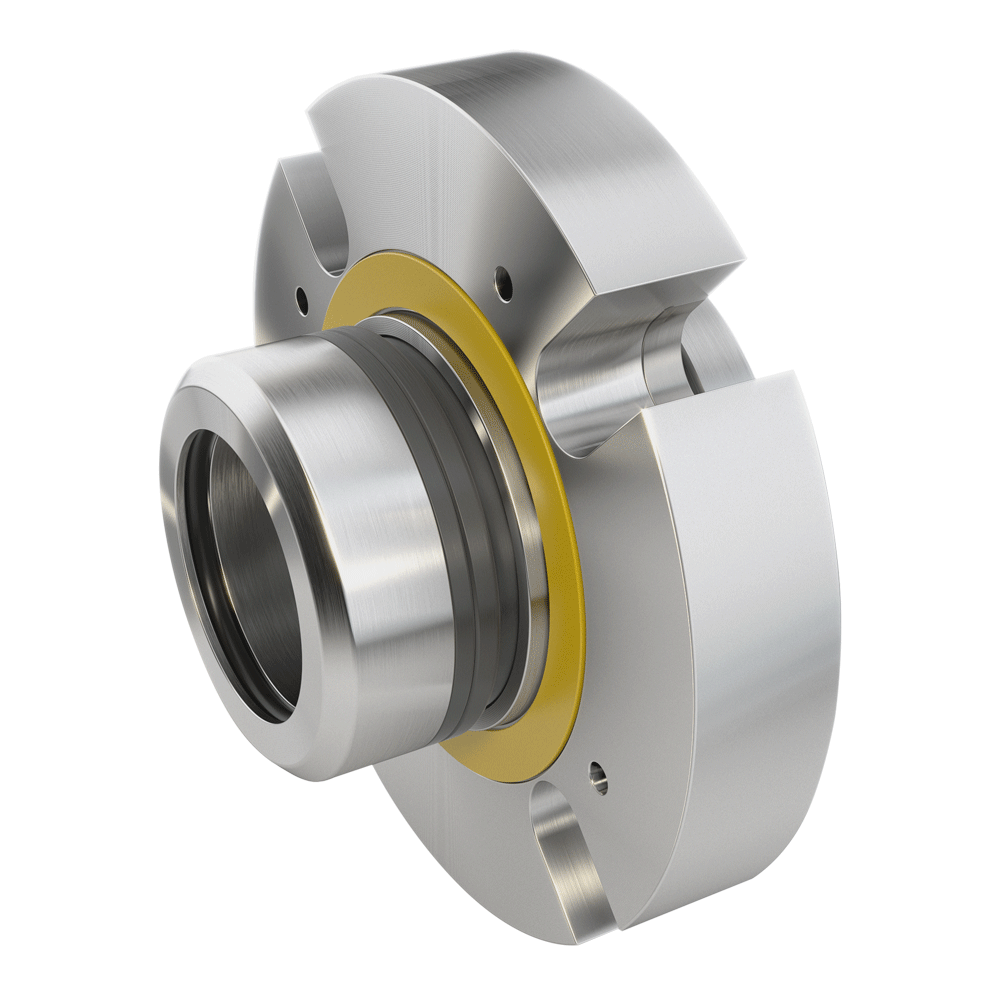
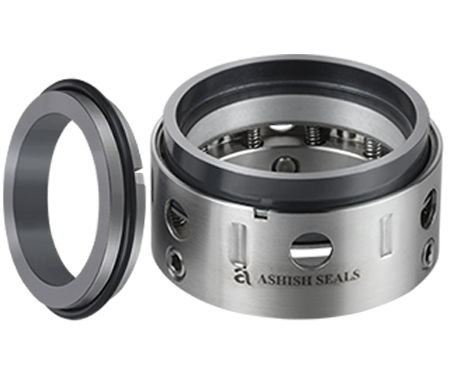
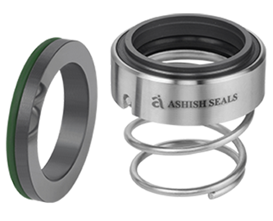
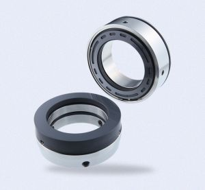

Mechanical seals are advanced sealing devices used to prevent fluid leakage from rotating equipment such as pumps, compressors, and mixers. Unlike traditional packing, mechanical seals offer a more reliable and efficient sealing solution, especially in high-pressure and high-speed applications.
Working Principle
A mechanical seal works by using two very flat, smooth surfaces—one stationary and one rotating—pressed together by a spring or hydraulic force. One surface is typically attached to the shaft and rotates with it, while the other is fixed to the equipment housing. A thin fluid film between the faces allows lubrication and minimizes wear while preventing leakage.
Main Functions
Prevent leakage of fluids (liquid or gas) from rotating equipment
Maintain system pressure and integrity
Reduce energy losses due to friction
Protect internal components from contamination

Standard Mechanical Seal

Cross Section Diagram
Applications
Centrifugal Pumps
Compressors
Agitators and Mixers
Reactors
Marine Propulsion Systems
Power Generation Equipment
Oil & Gas and Petrochemical Industries
Types of Mechanical Seals
Single Mechanical Seals: Basic design with one pair of seal faces
Double Mechanical Seals: Two seal sets used in series or back-to-back for high-severity environments
Cartridge Seals: Pre-assembled units for easy installation and reduced error
Balanced Seals: Designed to handle higher pressure with reduced face wear
Unbalanced Seals: Simpler, cost-effective option for low to moderate pressures
Dry Gas Seals: Used in compressors, offering non-contact sealing with minimal wear

Single Mechanical Seals

Double Mechanical Seals

Cartridge Seals

Balanced Seals

Unbalanced Seals

Dry Gas Seals
Materials Used
Seal Faces: Carbon, Silicon Carbide, Tungsten Carbide, Ceramic
Secondary Seals: NBR, FKM (Viton®), EPDM, PTFE
Springs and Metal Parts: Stainless Steel, Hastelloy, Inconel
Selection Criteria
Choosing the right mechanical seal involves:
Type of fluid being sealed (chemicals, water, oil, slurry, etc.)
Operating temperature and pressure
Shaft speed and size
Presence of solids or abrasive particles
Required reliability and maintenance intervals
Common Causes of Seal Failure
Incorrect installation or alignment
Dry running (lack of lubrication)
Chemical attack on sealing materials
Thermal shock or cycling
Excessive vibration or shaft deflection
Improper material selection for operating conditions
Advantages of Mechanical Seals
Superior leakage control over packing seals
Reduced maintenance and downtime
Longer equipment life due to better sealing
Greater energy efficiency with lower friction
Cleaner, environmentally safer operation
Conclusion
Mechanical seals are critical components in fluid-handling systems, offering reliable sealing for rotating machinery across a wide range of industries. Their efficiency, safety, and longevity make them the preferred sealing solution in both industrial and commercial applications. Proper seal selection, material compatibility, and installation practices ensure optimal performance and service life.